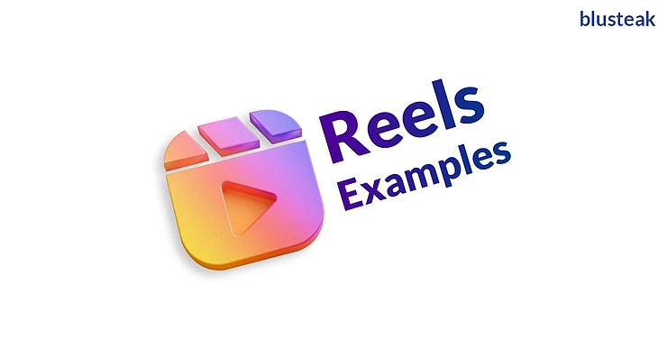

Instagram introduced Reels in 50 countries, including India, in August 2020. And users around the country are using
Instagram Reels for business promotion and product marketing.
But how beneficial can Reels be to the small businesses?
You'll find it out in this article. And you'll also read about nine ways to grow your business with Instagram Reels.
Yes, creating Reels might feel like an extra burden. But when done right, you can build authority in your industry and
reach more of your target audience.
So, keep reading to find what Instagram Reels is, and how to use it.

What is Instagram Reels?
Reels is the latest feature of Instagram. And it allows you to share short video clips (up to 15 seconds long) with all
the users of Instagram. You can dub audio, edit video and add instant effects before sharing your Reel. The Reel video
will then appear on your followers’ feed. And those videos are also available in the Explore page for other Instagram
users to check.
Why should you use Instagram Reels?
Well, your audience is looking for to-the-point content. And Instagram Reels provide you with an opportunity to be
creative while being relevant. It’s a quick and convenient way to engage your audience and deliver your message.
And some major benefits of Instagram Reels are –
- Better Visibility – Instagram Reels provide another way (apart from IGTV, Live and Stories) to reach your target audience.
- Better Shareability – Reels, unlike Stories, won’t vanish after 24 hours. Users will be able to view and share them for a longer time.
- Better Discoverability – A public Reels video appears in the Explore tab, distributing your content to many users outside your followers. And the videos also appear on the pages dedicated to the songs, the hashtags or the effects added in the video.
Also, Reels is a new feature, and Instagram will want more and more users to create content in it. So, Instagram will allow Reels videos to reach more and more people. And you must cash in the opportunity by creating as many relevant Reels as you can.
How to use Instagram Reels for businesses?
Now that you know how useful Reels can be for small businesses, here are nine Instagram Reels ideas to kick-start business content creation –
1. Showcase new products
Promote your products and services with catchy captions and AR overlays. Whether you're selling electronics, clothes or any other product, you can create Reels. You can either talk about the benefits or show how something works. Using a combination of photos and video snippets, you can provide detailed insights into your products and services.
2. Answer common questions
Service-based companies can create bite-sized how-to videos to solve target customers’ pain points. For example, if you provide home security services, you can speak about the various ways to secure a house. And if you're into pizza delivery, you can make Reels on how to make a pizza tastier in 15 seconds (the secret sauce is the ‘sauce’).
3. Provide helpful tips
Another engaging way to use Instagram Reels for businesses is to share helpful tips. These tips can either be about your services or other problems your audience might face in general. You can even share quirky DIY videos to help your customers. Through a series of Reels, you can guide your audience to solutions.
Check how Blusteak Media shares informative content through Instagram Reels
4. Suggest use cases
Then, apart from speaking only about, say shoes, you can suggest clothing ideas to go best with different colours. Or you might want to suggest your flawless printing service can get people their dream job, dream partner or dream home. You can also compile user-generated Reels to show how your sweets, for example, are helping in making friends. Be creative, but be real.
5. Collaborate with influencers
Promotions by influencers can increase awareness about products. And you can ask relevant influencers to create and share content for you.
Influencers can do quick reviews or mention how your product helps. And you can collaborate with influencers even to promote an informative YouTube video, podcast or blog you’ve created. Such promotions will build your authenticity and credibility while educating your audience.
6. Post behind-the-scenes videos
Behind-the-scenes content adds a human touch to your business. And you can use Instagram Reels to share such videos. You can give a glimpse of your office (or store) or you can show how your team works together to get things done. Occasionally, you can even share off-work Reels of family time, team lunch or vacations.
7. Share exclusive deals/sales
You can use Reels to post about discounted sale offers on your products. And you can even partner with other small businesses, and offer lucrative deals on their products/services. Apparel shops can partner with jewellery stores; booksellers with gift shops and so on. Such collaborations will build trust among your audience as well as other businesses.
8. Tease upcoming events
Instagram Reels can be snappy in building awareness about upcoming workshops, training sessions and other events. You can arouse curiosity, and pull in new followers, by giving sneak peeks into new product launches.
9. Get into the trend
You have got a few different ways to get trending (and even be viral) with Instagram Reels. You can use trending hashtags, popular audio clips or AR effects and get discovered among your audience.
So, observe the Reels in the Discover tab to find a content format which is trending. And when you feel a format will resonate with your audience, use it. It’s one of the quickest (but not the easiest) ways for business growth with Instagram Reels.

How are businesses using Instagram Reels?
1. Blue Tokai Coffee Roasters
Blue Tokai Coffee Roasters is sharing Reels, showing how to make various drinks with their coffee. Instead of
advertising, it shows how to use a product and attract the target audience.
2. Fox Star Hindi
Fox Star Hindi is posting Reels with funny and interesting scenes from upcoming movies. Such content excites and
encourages the audience to check the site.
3. Fabindia
Fabindia is creating Reels, giving different ideas to don their clothing range. These videos educate the audience and
prompt them to visit the store.
4. Sterling Accuris Diagnostics
Sterling Accuris Diagnostics is bringing Reels, which promote their packages. It is educating the audience while also
increasing engagement.
5. Bewakoof
Bewakoof is using Reels to share funny videos to attract its target audience. Such videos are engaging and shareable,
thus improving brand awareness.
How to create Instagram Reels?
Creating an Instagram Reels is a 5-step process. And in most cases, it would take less than 3 minutes for your video to
go live. Follow these steps –
Step 1: Open Reels camera
Reels feature is available within the Instagram app. And to access it, open the camera as if you're shooting a Live
video or posting a Story. You'll find the Reels option at the bottom.
Step 2: Select an audio
Once you open the Reels camera, you'll get the option (on the left side of the screen) to pick audio from their library.
You can skip it if you want to create Reels with your own voice/audio.
Step 3: Add effects
Below the audio option, you'll find various editing tools. Use them to add filters and effects like AR overlays and slow
motion. A timer feature is also available to create Instagram Reels hands-free.
Step 4: Record/Upload a clip
When you're done with the setup, you're ready to create a Reels video. You can either record or upload an existing video
from your mobile. Only 15-second clip will be shared in one Reel. And when you finish recording/uploading your video,
add text, GIFs and stickers as required.
Step 4: Share
After you finalise, share your Reel with the world. You can post it to your Stories, add it to your feed and make it
available in the Explore page.
Get started with Instagram Reels
Well, that was all about using Instagram Reels for businesses. You now know why Reels is important for small businesses,
how others are using it and how you can too.
Now, armed with this knowledge, you're ready to promote your business. So, begin.
And follow Blusteak Media on Instagram for more creative inspiration.


 +91 77366 95526
+91 77366 95526
 contact@blusteak.com
contact@blusteak.com